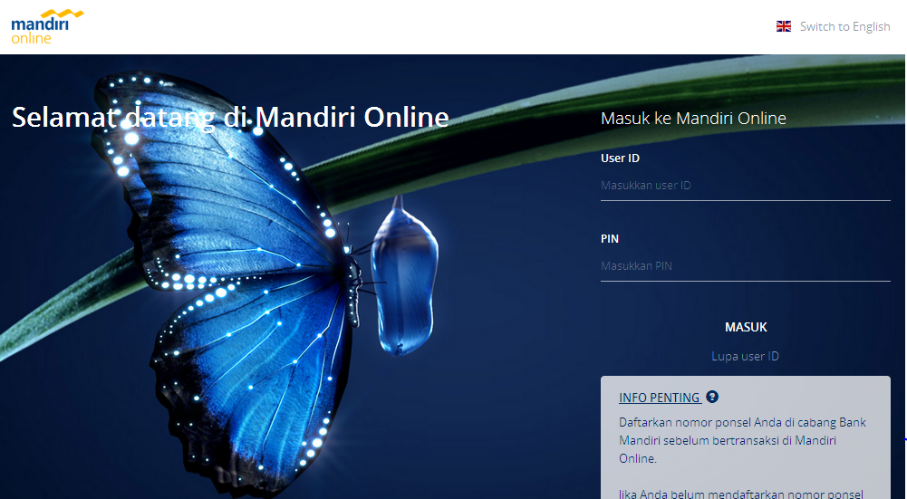
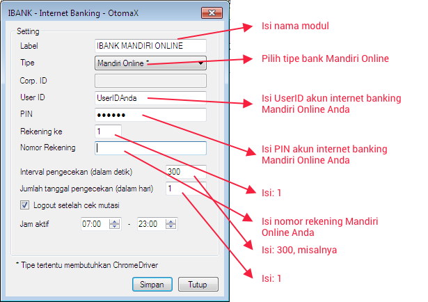

Mandiri Online
Bank Mandiri pada kuartal pertama tahun 2017 meluncurkan layanan berbasis online yang baru bernama Mandiri Online, dimana sebelumnya juga sudah memiliki layanan serupa bernama Mandiri Internet. Kegunaan 2 layanan tersebut sama, yaitu nasabah dapat melakukan cek saldo, transfer, cek mutasi rekening dan lain - lain secara online, akan tetapi tampilan serta tata strukturnya berbeda.
Tampilan Mandiri Internet seperti di bawah ini:

Tampilan Mandiri Online seperti di bawah ini:

Klik 2 gambar di atas untuk mengunjungi situs Mandiri Internet dan Mandiri Online
Di OtomaX telah tersedia modul Mandiri yang mengadaptasi Mandiri Internet berguna membaca mutasi rekening dari Bank Mandiri. Dengan hadirnya Mandiri Online tentu diperlukan penyesuaian agar modul di OtomaX tersebut dapat juga membaca mutasi dari Mandiri Online. Oleh sebab itu ditambahkan fitur Mode Mandiri Online di modul Mandiri OtomaX pada versi 3.7.5.
Sebelum mencoba fitur ini, perlu Anda ketahui bahwa fitur ini hanya tersedia di edisi Standard, Pro, Advanced, Enterprise dan Ultimate klik disini, maka jika edisi anda belum edisi tersebut upgrade dahulu klik disini; jika versi OtomaX Anda bukan 3.7.5 update dahulu klik disini; dan jika masa berlaku OtomaX Anda telah berakhir bayar iuran dahulu klik disini; dan jika belum mempunyai software OtomaX beli dahulu klik disini.
Kemudian untuk mengaktifkan fitur tersebut ialah sebagai berikut:
- Pastikan Anda telah terdaftar di layanan Mandiri Online dari Bank Mandiri. Hubungi Mandiri Call 14000 atau datang ke kantor Bank Mandiri terdekat.
- Telah menginstall Service Pack 1 (SP1) apabila menggunakan Windows 7, klik disini (download dan install).
- Pastikan komputer Anda telah terinstall software Internet Explorer versi 11; jika belum, download dan install dahulu klik disini.
- Pastikan telah menginstall Transport Layer Security (TLS) v1.2 klik disini (download & install).
- Pastikan telah melakukan update OtomaX dari v3.7.5 ke v3.8.9 atau lebih tinggi, klik disini.
-
-
Untuk OtomaX v3.9.1 atau lebih rendah, pilih modul Mandiri -> klik kanan -> klik
Setting -> kemudian lakukan sesuai petunjuk di gambar di bawah ini:

-
Untuk OtomaX v4.0.0 atau lebih tinggi, pilih modul Internet Banking -> klik kanan -> klik
Tambah Internet Banking... -> kemudian lakukan sesuai petunjuk di gambar di bawah ini:

-
Untuk OtomaX v3.9.1 atau lebih rendah, pilih modul Mandiri -> klik kanan -> klik
Setting -> kemudian lakukan sesuai petunjuk di gambar di bawah ini:
- Restart komputer Anda.
- Selesai.
Catatan 1: Agar fitur bekerja optimal pastikan Anda menggunakan sistem operasi Windows 7 SP1 dan koneksi internet yang stabil (ramah dengan situs Mandiri Online).
Catatan 2: Jika Anda pengguna Mandiri Internet dan belum ingin menggunakan Mandiri Online, maka jangan centang cekbox: Mode Mandiri Online.
Catatan 3: Di OtomaX edisi Standard dan Pro terdapat modul Internet Banking mulai versi 4.0.0.
Catatan 4: Apabila menggunakan OtomaX versi 4.0.0 atau lebih tinggi pastikan telah menginstall Google Chrome, Chrome Driver, dan Selenium WebDriver klik disini.